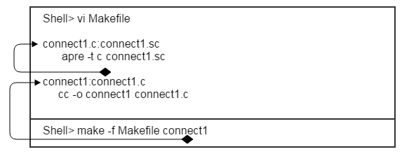

To understand the structure of Makefile, let's take a look at how to make a Makefile with simple c code. As the Altibase Makefile specification complies with the GNU specification, it is recommended to use gmake. However, in this document, it is explained according to the general rules.
Basic structure of Makefile
A Makefile is a scripting language that defines the processes that are going on to make an executable file. In this section, we are going to compile the following source.
#include <stdio.h>
main()
{
printf (“hello, world\n”);
}
This source can be compiled at the prompt as follows.
Shell> cc –o a a.c
It can be compiled with make using the simple Makefile script as follows.
shell> vi Makefile a:a.c # User-created protocols and dependencies cc -o a a.c # Describes the actual command line to be executed
- A Makefile can be described as a script that navigates through the source and describes the listed commands to create a target as described above.a:a.c finds a.c to make a (check for changes)
- cc -o a.c executes this command when a.c exists
- shell> make -f Makefile If the file name is Makefile, -f Makefile can be omitted
If there is no change to the same source, the error "make: is up to date" will be output because compilation does not need to be performed.
Example Sources
The example source to proceed uses $ALTIBASE_HOME/sample?APRE?connect1.sc included in the same sources in the directory where Altibase is installed. (Based on Altibase 5.3 or later)
This example was written based on the environment compiling based on the GCC compiler in Linux. Therefore, when using other Unix environments and compilers, a part of Makefile must be written differently for the environment.
Some of the sources are as follows.
Shell> vi connect1.sc
int main()
{
char usr[20];
char pwd[20];
char opt [200];
sprintf (usr, “sys”);
sprintf (pwd, “manager”);
sprintf (opt, “DSN=127.0.0.1;CONNTYPE=1;PORT_NO=27584”);
EXEC SQL CONNECT :usr IDENTIFIED BY :pwd USING :opt ;
if (sqlca.sqlcode != 0)
printf (“ConnectErr: %d-%s\n”, SQLCODE,sqlca.sqlerrm.sqlerrmc);
Running the Precompile
The APRE extension of Altibase uses "*.sc". Since this file is not in a format that can be directly interpreted by the C/C++ compiler, it must be converted into C/C++ source with the precompiler provided by Altibase.
Makefile contents
connect1.sc:connect1.sc apre -t c connect1.sc
Execution
Shell> make -f Makefile connect1.sc
When running after creating the Makefile like this, connect1.c is newly created. (Depending on the extension option, change it to C/C++ according to the user environment.)
Compling
Now add a convention to the Makefile to make it the executable connect1.

Of course, it is okay to use pre-compilation protocols and compile conventions in the connect1 protocol. Here, it will be explained separately. In the above, because the connect1 protocol requires connect1.c in the make step, the protocol for connect1.c is found in the Makefile.
Since there is a corresponding protocol in the Makefile, it operates in the order of precompiling first and then cc compiling. However, when actually compiling, it will get the following error:
$ make -f Makefile connect1
apre -t c connect1.sc
-----------------------------------------------------------------
Altibase C/C++ Precompiler.
Release Version 6.5.1.3.0
Copyright 2000, ALTIBASE Corporation or its subsidiaries.
All Rights Reserved.
-----------------------------------------------------------------
cc -o connect1 connect1.c
connect1.c:9:29: error: ulpLibInterface.h: No such file or directory
connect1.c: In function 'main':
connect1.c:68: error: storage size of 'ulpSqlstmt' isn't known
..........................................................
make: *** [connect1] Error 1
Refer to the line in bold, there was an error that the header file could not be found. In the Makefile, the path to the header and library that the user used on the source to compile should be specified as described in the next step.
Specifying the header file and library path
Modify Makefile as follows to refer to Header file and Library.
Shell> vi Makefile
ALTI_INCLUDE=${ALTIBASE_HOME}/include
ALTI_LIBRARY=${ALTIBASE_HOME}/lib
connect1.c: connect1.sc
apre –t c connect1.sc
connect1 : connect1.c
cc –o connect1 connect1.c –I$(ALTI_INCLUDE) –L$(ALTI_LIBRARY)
The above error occurs when trying to refer to the library in which the functions used in the source are defined, but cannot be found at the compile stage. In the case of headers, it is no necessary to specify all individual head files, but in the case of a library, it must be specified.
Specifying the basic library for APRE compilation
Modify the Makefile as follows.
Add basic library fo APRE
$ vi Makefile
ALTI_INCLUDE=${ALTIBASE_HOME}/include
ALTI_LIBRARY=${ALTIBASE_HOME}/lib -lapre -lodbccli
connect1.c:connect1.sc
cc -o connect1 connect1.c -I$(ALTI_INCLUDE) -L$(ALTI_LIBRARY)
Altibase requires two libraries (apre, odbccli) when generating binaries with precompilation. These are located in ($ATLIBASE_HOME/lib). The notation for the library in the Makefile is specified with the "-l" option. When looking at the file, it exists in the form of "libapre.a" or "libapre_sl.so". In the library name, the name can be specified without "lib" and extension (.a or .so).
Adding the system library
When checking the executed result after recompiling with only the basic library added, an error still occurs as follows.
$ make connect1
apre -t c connect1.sc
cc -o connect1 connect1.c -I/ssd/altibase_home/include -L/ssd/altibase_home/lib -lapre -lodbccli
/ssd/altibase_home/lib/libapre.a(ulpLibInterface.o): In function `ulpLibInit':
ulpLibInterface.c:(.text+0x77): undefined reference to `pthread_rwlock_init'
/ssd/altibase_home/lib/libapre.a(ulpLibInterface.o): In function `ulpDoEmsql':
ulpLibInterface.c:(.text+0x1e6): undefined reference to `pthread_rwlock_wrlock'
...........................................
...........................................
The above error occurs because the thread library for the POSIX thread function used in the APRE library is not found. As with the previously added library, other libraries must be added referenced by APRE to Makefile as the next step.
$ vi Makefile
ALTI_INCLUDE=${ALTIBASE_HOME}/include
ALTI_LIBRARY=${ALTIBASE_HOME}/lib -lapre -lodbccli -lpthread
connect1.c:connect1.sc
cc -o connect1 connect1.c -I$(ALTI_INCLUDE) -L$(ALTI_LIBRARY)
Additional system libraries required for compilation and each compilation option differ depending on the OS environment and the type of compiler. For more detailed information, please refer to the description of each compiler in this document.
- How to refer to Altibase's sample Makefile
- How to use the ldd command
- How to use the nm command
- How to refer to the man page
Referring to Altibase sample Makefile
Using the ldd command
The use of the ldd command is as follows.
$ ldd $ALTIBASE_HOME/bin/apre
linux-vdso.so.1 => (0x00007fff977ff000)
libdl.so.2 => /lib64/libdl.so.2 (0x000000369c200000)
libpthread.so.0 => /lib64/libpthread.so.0 (0x000000369ca00000)
libcrypt.so.1 => /lib64/libcrypt.so.1 (0x00000036a9600000)
librt.so.1 => /lib64/librt.so.1 (0x000000369d600000)
libstdc++.so.6 => /usr/lib64/libstdc++.so.6 (0x00000036a1600000)
libm.so.6 => /lib64/libm.so.6 (0x000000369ce00000)
libgcc_s.so.1 => /lib64/libgcc_s.so.1 (0x000000369fe00000)
libc.so.6 => /lib64/libc.so.6 (0x000000369c600000)
/lib64/ld-linux-x86-64.so.2 (0x000000369be00000)
libfreebl3.so => /lib64/libfreebl3.so (0x00000036a9a00000)
Since libm.so is referenced as above, add "-lm" to Makefile.
Using the man page
Using the UNIX man command, some symbols can be found using the following method for the purpose of the symbol and the library referenced by this symbol.
$ man 3 cos ( cos는 undefined symbol name )
COS(3) Linux Programmer Manual COS(3)
NAME
cos, cosf, cosl - cosine function
SYNOPSIS
#include <math.h>
double cos(double x);
float cosf(float x);
long double cosl(long double x);
Link with -lm.
the man page explains that the cos function is included in the mat related library, and that library "-lm" is added when linking.
Causes and solutions for bit errors during compilation
Using the APRE library suitable for compilation mode
To make a 64bit program using the APRE, a 64bit APRE compiler, a 64bit APRE file, and a compilation option are needed to compile the program for each compiler for 64bit.
Similarly, to make a 32bit program for the APRE, a 32bit APRE compiler, a 32bit APRE library, header file, and a 32bit option must be specified to compile for 32bit.
Downloading 32bit client development tool (Library and Precompiler)
Download and install the 32bit client install package for the platform you want to install from the client selection at http://support.altibase.com/en/product.

Bit error when compiling
How to check the bit in the library
If the compile bit and the bit of the linked APRE library do not match, an error occurs during compilation. In this case, check whether the corresponding library bit is 32bit or 64bit. Then, check the bit of the library in the following method.
shell> cd $ALTIBASE_HOME/lib # directory where altibase apre library is installed
shell> file libapre_sl.so
libapre_sl.so: ELF 32-bit LSB shared object, Intel 80386, version 1 (GNU/Linux), dynamically linked, not stripped # If APRE library for 32bit is installed in Linux
libapre_sl.so: ELF 64-bit LSB shared object, x86-64, version 1 (GNU/Linux), dynamically linked, not stripped # If APRE library for 64bit is installed in Linux
As above, the bit of library can be checked with the "file" command, which is a Unix command, and the messages may be slightly different for each OS, but the bit can be changed with the same message.
Bit options when compiling
Bit-related compilation options must be specified for each compiler. The table below shows the 32bit and 64bit compilation options for each compiler. Options may differ depending on the type of CPU supported by the compiler. For other detailed options, please refer to the manual for each compiler.
| OS | SUN | HP | AIX | Linux |
|---|---|---|---|---|
| cc compiler 64bit option | -xarch=v9 or "-m64 -xarch=sparc" (when using the SUN Sparc) | +DD64 | -q64 | -m64 |
| cc compiler 32bit option | -xarch=v8plusa (when using the SUN Sparc) | +DD32 | -q32 | -m32 |
Adding C++ library
#Error message generated during makefile
sesc -t c connect1.sc
-----------------------------------------------------------------
Altibase C/C++ Precompiler.
Release Version 5.3.3.38
Copyright 2000, ALTIBASE Corporation or its subsidiaries.
All Rights Reserved.
-----------------------------------------------------------------
gcc -o connect1 connect1.c -I/ssd/altibase_home/include -L/ssd/altibase_home/lib -lsesc -lodbccli -lpthread -lm -ldl -lcrypt -lrt
/ssd/altibase_home/lib/libodbccli.a(idvHandlerTimer_aoc.o): In function `idvTimerThread::~idvTimerThread()':
idvHandlerTimer.cpp:(.gnu.linkonce.t._ZN14idvTimerThreadD0Ev+0xc): undefined reference to `operator delete(void*)'
/ssd/altibase_home/lib/libodbccli.a(idvHandlerTimer_aoc.o):(.gnu.linkonce.r._ZTI14idvTimerThread+0x0): undefined reference to `vtable for __cxxabiv1::__si_class_type_info'
...............................
$ vi Makefile
ALTI_INCLUDE=${ALTIBASE_HOME}/include
ALTI_LIBRARY=${ALTIBASE_HOME}/lib -lapre -lodbccli -lpthread -lm -lstdc++
...............................
When using the C compiler, the C++ library required for each platform is as follows. Please refer to the table below and add them to Makefil for each compiler.
| Platform | Library |
|---|---|
| SUN | -lCrun |
| HP | -lstd –lstream –lCsup -lc |
| AIX | -lC |
| LINUX | -lstdc++ -lc |
Using the C++ compiler
In the case of using the C++ compiler, most of the problems listed above can be avoided, so it will be not be explained separately. However, the C++ compiler has a separate 64bit option, so be aware of this for each compiler.
{kind=link}